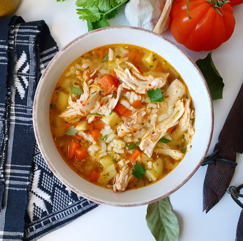

Canja de Galinha

Description
Canja or Canja de Galinha traditional chicken soup that is very popular from the Cape Verdean kitchen..
Canja is the mother of Cape Verdean comfort food. It is a thick, rich and delicious chicken soup that is made with rice, shredded chicken, vegetables and simple seasonings.
Bowl of Cape Verdean canja surrounded by parsley, a cloth napkin and a cold beverage.
Canja has long been a staple of Cape Verdean cuisine. We eat it to celebrate special occasions, to mourn the loss of our loved ones, and to fight off the cold and flu. Portugal and Brazil also have their own versions of canja that they either refer to as canja or canja de galinha which translates to ‘canja made of chicken’.
Ingredients
- 1 chicken, cut into pieces
- 2 Tbs vegetable oil
- 2 onions, diced
- 5 cloves garlic, whole and peeled
- 2 cups Calrose rice (any rice will do)
- 8 cups vegetable stock (most flavorful liquids will do, including chicken stock or even boullion cubes and water)
Steps
- We used a whole fryer chicken for our recipe and cut it into pieces ourselves. We think the recipe would be just as good with bone-in thighs or drumsticks substituted for convenience.
- We heated the oil in our large Dutch oven oven just below medium heat on the stove, and once hot, added half our chicken (seasoned with salt and pepper, of course). As is the case when browning any large amount of meat, it is preferable to brown in batches rather than overcrowd the pan and have the meat steam instead of brown
- After five or six minutes the chicken was a light golden brown in color and was ready to be turned.
- After another four or five minutes, the first batch of chicken was brown on both sides and ready to be removed to a nearby large plate. The other chicken pieces were browned in a similar manner and removed to the same plate while we worked on our onions and garlic. Since we did not want to overbrown the onions, we turned the heat down to medium-low and began sauteeing the onions in the chicken drippings and oil
- Garlic has a much higher burning risk than onions do, so it was added after about five minutes once the onions had softened a little and taken on some color from the pan drippings
- After another three minutes, once the garlic had softened and the garlic aroma was noticeable, we added the rice to the pot and sitirred to combine and to coat the rice evenly with oil
- After another couple of minutes we returned the chicken to the pot and covered it with the vegetable stock
- The soup was brought to a simmer over medium heat, then covered. The heat was dropped to low and the soup simmered for about thirty-five minutes until the chicken and rice were tender and cooked through
- The soup broth and rice were ladled into large bowls and topped with a chicken piece. We prefer the hindquarter so that’s what we served first